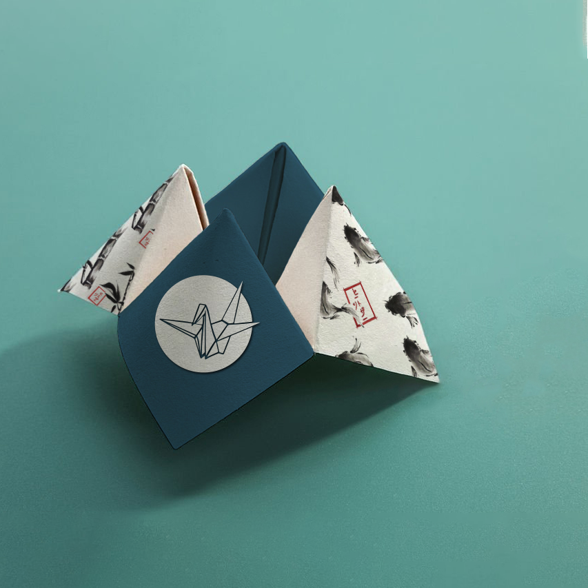

VIEW
BRAND & CONTENT
BRAND & CONTENT
VIEW
ILLUSTRATIONS
ILLUSTRATIONS
Bringing ideas to life through thoughtful conceptualisation is, to me, a kind of superpower — turning vision into reality through design. Proficient in a range of digital tools, Adobe Photoshop and Illustrator is apart of my daily creative routine. As someone who sometimes finds it challenging to express thoughts verbally, I channel my voice into visual storytelling. Thus design has become my language, and I pour meticulous attention into every detail to communicate ideas in the most clear, intentional, and impactful way possible.